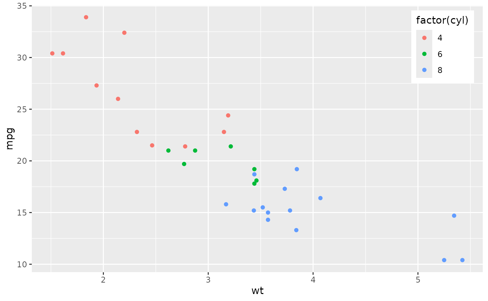

Place a ggplot legend inside the emptiest panel corner
Source:R/legend-inside.R
hv_legend_inside.RdInspects a built plot, finds the panel corner with the fewest data points, and anchors the legend there. When no corner is clear of data (e.g. dense multi-curve panels), or the plot is faceted, the legend is sent to an outside position instead. The CORR house convention is in-panel legends placed in dead space; this automates the corner choice.
Arguments
- plot
A single-panel
ggplot.- threshold
Maximum fraction of data points allowed in the chosen corner box for an in-panel legend. If the emptiest corner exceeds it,
fallbackis used. Default0.08.- box_frac
Corner-box size as a fraction of panel width and height (
<= 0.5). Default0.30.- pad
Inset of the legend anchor from the panel edge, in npc units. Default
0.02.- fallback
Outside
legend.positionused when no corner is empty enough or the plot cannot be reasoned about (facets). One of"right","left","top","bottom". Default"right".
Value
The input plot with a theme layer added that
sets the legend position.
See also
Worked recipe with rendered output: https://ehrlinger.github.io/hvti_graphics/legends.html.
Examples
if (requireNamespace("ggplot2", quietly = TRUE)) {
library(ggplot2)
p <- ggplot(mtcars, aes(wt, mpg, colour = factor(cyl))) + geom_point()
hv_legend_inside(p)
}
